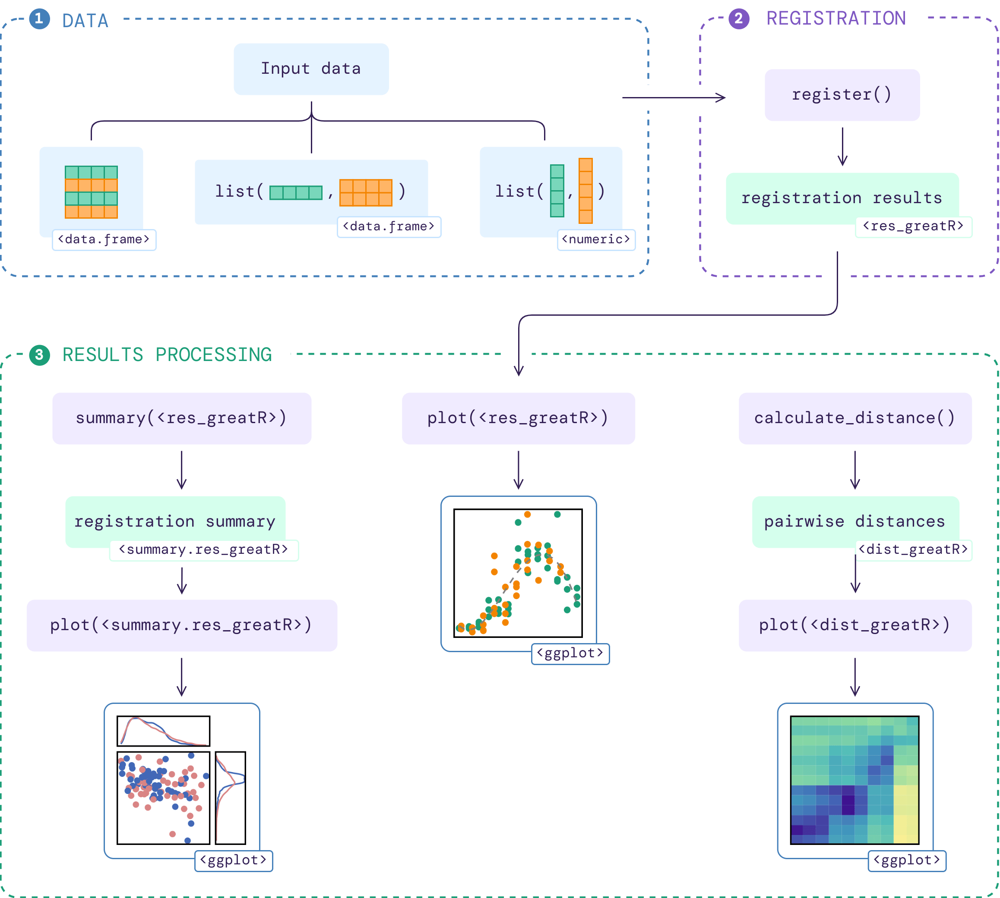

greatR (Gene Registration from Expression and Time-courses in R) is a tool to register (align) two sets of gene expression profiles that users wish to compare.
These gene profiles data will be referred as the query and the reference data. To match the time point ranges between those profiles, the time points of the query profiles will be transformed through a stretching and shifting process. This tool uses a statistical model comparison based on a Bayesian approach to evaluate the optimality of the gene expression profiles alignment.
Package workflow
The flowchart below illustrates the workflow of the package given an input data:

More details on how to use this package are available on function documentations and the following vignettes:
Installation
You can install the stable version of greatR from CRAN with:
install.packages("greatR")And the development version of greatR from GitHub with:
# install.packages("devtools")
devtools::install_github("ruthkr/greatR")Usage - quick start
This is a basic example which shows you how to register (align) gene expression profiles over time:
# Load a data frame from the sample data
b_rapa_data <- system.file("extdata/brapa_arabidopsis_data.csv", package = "greatR") |>
utils::read.csv()
# Running the registration
registration_results <- register(
b_rapa_data,
reference = "Ro18",
query = "Col0",
scaling_method = "z-score"
)
#> ── Validating input data ────────────────────────────────────────────────────────
#> ℹ Will process 10 genes.
#> ℹ Using estimated standard deviation, as no `exp_sd` was provided.
#> ℹ Using `scaling_method` = "z-score".
#>
#> ── Starting registration with optimisation ──────────────────────────────────────
#> ℹ Using L-BFGS-B optimisation method.
#> ℹ Using computed stretches and shifts search space limits.
#> ℹ Using `overlapping_percent` = 50% as a registration criterion.
#> ✔ Optimising registration parameters for genes (10/10) [2s]Reference
Calderwood, A., Hepworth, J., Woodhouse, … Morris, R. (2021). Comparative transcriptomics reveals desynchronisation of gene expression during the floral transition between Arabidopsis and Brassica rapa cultivars. Quantitative Plant Biology, 2, E4. doi:10.1017/qpb.2021.6